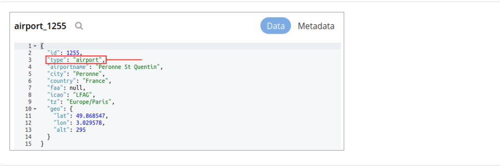
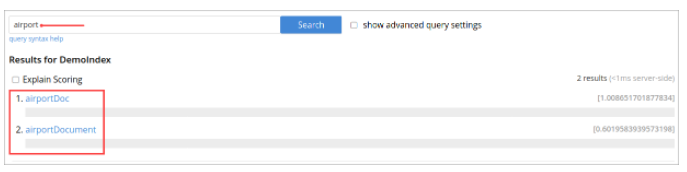
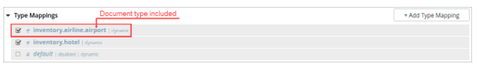
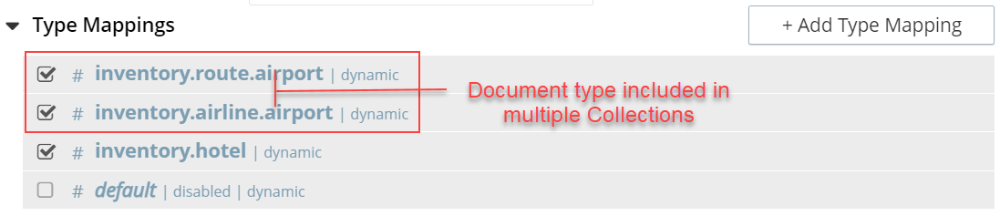

Specifying Type Mappings
Whereas a type identifier tells the index how to determine the position in each document of the characters that specify the document’s type, a type mapping specifies the characters themselves.
If Doc ID up to separator is used as a type identifier, and the underscore is specified as the separator-character, a type mapping of hotel ensures that hotel_10123, rather than airline_10, is indexed.
When the Add Index, Edit Index, or Clone Index screen is accessed, the Type Mappings panel can be opened.
The default setting is displayed:
Left-click on the + Add Type Mapping button. The display now appears as follows:
The display indicates that a single type mapping is currently defined, which is default.
This is a special type mapping created by every index automatically: it is applied to each document whose type either does not match a user-specified type mapping, or has no recognized type attribute. Therefore, if the default mapping is left enabled, all documents are included in the index, regardless of whether the user actively specifies type mappings.
To ensure that only documents corresponding to the user’s specified type mappings are included in the index, the default type mapping must be disabled (see below for an example).
Each type mapping is listed as either dynamic, meaning that all fields are considered available for indexing, or only index specified fields, meaning that only fields specified by the user are indexed.
Therefore, specifying the default index with dynamic mapping creates a large index whose response times may be relatively slow; and is, as such, an option potentially unsuitable for the most production deployments.
For information on how values are data-typed when dynamic mapping is specified, see the section below, Document Fields and Data Types.
To specify a type mapping, type an appropriate string (for example, hotel) into the interactive text field.
Note the only index specified fields checkbox: if this is checked, only user-specified fields from the document are included in the index.
(For an example, see Specifying Fields, below.)
Optionally, an analyzer can be specified for the type mapping: for all queries that do indeed support the use of an analyzer, the specified analyzer will be applied, rather than the default analyzer (which is itself specified in the Advanced pane, as described below, in Specifying Advanced Settings).
A list of available analyzers can be accessed and selected from, by means of the pull-down menu to the right of the interactive text-field:
The default value, inherit, means that the type mapping inherits the default analyzer.
Note that custom analyzers can be created and stored for the index that is being defined using the Analyzers panel, described below in Creating Analyzers.
On creation, all custom analyzers are available for association with a type mapping, and so appear in the pull-down menu shown above.
Additional information on analyzers can also be found on the page Understanding Analyzers.
The Type Mappings panel now appears as follows:
Note that the checkbox to the left of each of the two specified type mappings, hotel and default, is checked.
Because default is checked, all documents in the bucket (not merely those that correspond to the hotel type mapping) will be included in the index.
To ensure that only hotel documents are included, uncheck the checkbox for default.
The panel now appears as follows:
Note also that should you wish to ensure that all documents in the bucket are included in the index except those that correspond to the hotel type mapping, uncheck the checkbox for hotel, and check the default checkbox:
Specifying Type Mapping for Collection
Type Mapping will allow you to search for documents from the selected scope, selected collections from the scope, and for a specific document type from the selected scope and collections.
For using non-default scope/collections, please refer: Using Non-Default Scope/Collections.
-
Left click on the + Add Type Mapping button. The display now appears as follows:
In the Type Mappings, you can add mapping of a single collection or multiple collections. To specify the collection, click the Collection drop-down list and select the required collection.
The Collection field displays the selected collection along with the selected scope. For example, inventory.airport or inventory.hotel.
-
Click ok to add the collection to the index. Continue the same process to add other collections to the index.
| In Type Mappings, you can add multiple collections to the index. However, you can either select only one collection to create a single collection index or select multiple collections to create an index with multiple collections. |
The Type Mappings panel appears as follows:
Type Mapping with Single Collection
With a single collection index, you can search documents only from a single collection specified in the Type Mappings.
Type Mapping with Multiple Collections
With multiple collections index, you can search documents across multiple collections (within a single scope) specified in the Type Mappings.
Type Mapping with Specific Document Type
With a specific document type, you can search documents of a specific type from a single collection or multiple collections. Every document in Couchbase includes the type field that represents the type of the document. For example, the type “airport” represents the documents related to airport information.

If you want to search for a specific document type from a single collection or multiple collections, you can manually specify the document type after the collection in the Collection field. For example, inventory.airline.airport or inventory.route.airport.
Now, when you search for the airport document type, the index will display all documents from a single collection or multiple collections where the type field is the airport.

You can click the document link and verify the document type.
Document Type with single collection
Every document in Couchbase includes the type field that represents the type of the document. For example, type “airport” represents the documents related to airport information.
If you want to search for a specific document type from a single collection, you can manually specify the document type after the collection in the Collection field.
For example, inventory.airline.airport or inventory.route.airport

Now, when you search for the airport document type, the index will display all documents from a single collection where the type field is airport.
Document Type with multiple collections
Every document in Couchbase includes the type field that represents the type of the document. For example, type “airport” represents the documents related to airport information.
If you want to search for a specific document type from the multiple collections, you can manually specify the document type after the collection in the Collection field.
For example, inventory.airline.airport or inventory.route.airport

Now, when you search for the airport document type, the index will display all documents from the multiple collections where the type field is airport.
Document-Fields and Data-Types
During index creation, for each document-field for which the data-type has not been explicitly specified (which is to say, text, number, datetime, boolean, disabled, geopoint, or geoshape), the field-value is examined, and the best-possible determination made, as follows:
| Type of JSON value | Indexed as... |
|---|---|
Boolean |
Boolean |
Number |
Number |
String containing a date |
Date |
String (not containing a date) |
String |
Geopoint |
|
Geoshape |
| The indexer attempts to parse String date-values as dates, and indexes them as such if the operation succeeds. However, on query-execution, Full Text Search expects dates to be in the format specified by RFC-3339, which is a specific profile of ISO-8601. |
The String values such as 7 or true remains as Strings and did not index as numbers or Booleans respectively.
The number-type is modeled as a 64-bit floating-point value internally.
Excluding child field/ child mapping from a dynamic FTS index
If you want to index everything except a child field or a child mapping, you add that child mapping and child field and turn off the child mapping and the Index option, respectively.
Perform the following steps:
-
In the index, add a type mapping and set it to dynamic.
-
In the type mapping, add a child field.
-
For the fields, uncheck the Index option from its settings.
-
For the mapping, uncheck the corresponding dynamic type mapping check box to disable it.
Specifying fields for Type Mapping
A Full Text Index can be defined not only to include (or exclude) documents of a certain type but also to include (or exclude) specified fields within each of the typed documents.
To specify one or more fields, hover with the mouse cursor over a row in the Type Mappings panel that contains an enabled type mapping. Buttons labeled edit and + appear:
Left-clicking on the edit button displays the following interface:
This allows the mapping to be deleted or associated with a different analyzer.
FTS Indexing does not work for fields having a dot (. or period) in the field name. Users must avoid adding dot (. or period) in the field name. Like using field.name or country.name is not supported. For example, { "database.name": "couchbase"}
|
If the only index specified fields checkbox is checked, only fields specified by the user are included in the index.
Left-clicking on the + button displays a pop-up that features two options:
These options are described in the following sections.
Add Child Mapping
The option insert child mapping specifies a document-field whose value is a JSON object. Selecting this option displays the following:
The following interactive field and checkbox are displayed:
-
{}: The name of a field whose value is a JSON object. Note that an analyzer for the field is specified by means of the pull-down menu.
-
only index specified fields: When checked, only fields explicitly specified are added to the index. Note that the JSON object specified as the value for {} has multiple fields of its own. Checking this box ensures that all or a subset of these can be selected for indexing.
When completed, this panel might look as follows (note that reviews is a field within the hotel-type documents of the travel-sample bucket whose value is a JSON object):
Save by left-clicking OK.
The field is now displayed as part of the hotel type mapping.
Note that by hovering over the reviews row with the mouse, the Edit and + buttons are revealed: the + button is present because reviews is an object that contains child-fields; which can now themselves be individually indexed.
Left-click on this, and a child-field, such as content, can be specified:
Add Child Field
The option insert child field allows a field to be individually included for (or excluded from) indexing, provided that it contains a single value or an array rather than a JSON object. Selecting this option displays the following:
The interactive fields and checkboxes are:
-
Field Name
-
Field Type
-
Field Searchable As
-
Analyzer
-
Index
-
Store
-
Include term vectors
-
Include in _all field
-
DocValues
Field Name
The name of any field within the document that contains a single value or an array, rather than a JSON object.
Field Type
The data-type of the value of the field.
This can be text, number, datetime, boolean, disabled, or geopoint; and can be selected from the field’s pull-down menu, as follows:
Field Searchable As
Typically identical to the field (and dynamically supplied during text-input of the field-value). This can be modified, to indicate an alternative field-name, whose associated value thereby becomes included in the indexed content, rather than that associated with the field-name specified in field.
Field Analyzer
An analyzer optionally to be used for the field. The list of available analyzers can be displayed by means of the field’s pull-down menu, and can be selected from.
Index
When checked, the field is indexed; when unchecked, the field is not indexed. This may be used, therefore, to explicitly remove an already-defined field from the index.
Store
When the child field store option is checked, the original field content is included in the FTS index, enabling the retrieval of stored field values during a search operation.
When unchecked, the original field content is not included in the FTS index. Storing the field within the index is necessary to support highlighting, which also needs "term vectors” for the field to be indexed.
Example
Ideally, enabling this Child Field Store option has a sizing aspect to the index definition. This option also permits highlighting of search texts in the returned results, so that matched expressions can be easily seen. However, enabling this option also results in larger indexes and slightly longer indexing times.
The field content will show up in queries (when the index has the store option checked) only when requested. There is a ‘fields’ section in the query for it.
{
"query": {...},
"fields": ["store_field_name"]
}
Setting "fields" to ["*"] will include the contents of all stored fields in the index.
| "store" - writes a copy of the field content into the index. When this checkbox is checked, the resulting index will proportionately increase in size. |
Include term vectors
When checked, term vectors are included. When unchecked, term vectors are not included.
Term vectors are the locations of terms in a particular field. Certain kinds of functionality (such as highlighting, and phrase search) require term vectors. Inclusion of term vectors results in larger indexes and correspondingly slower index build-times.
Include in_all field:
When checked, the field is included in the definition of _all, which is the field specified by default in the Advanced panel. When unchecked, the field is not included.
Inclusion means when query strings are used to specify searches, the text in the current field is searchable without the field name requiring a prefix. For Example, a search on description:modern can be accomplished simply by specifying the word ‘modern’. This is applicable for all query types and not just limited to query string query type.
Example
| "include in _all" will write a copy of the tokens generated for a particular field to the "_all" composite field. When this checkbox is checked, the resulting index will proportionately increase in size. |
Enabling this option results in larger indexes, so disable this option to always use field scoped queries in the search requests.
DocValues
To include the value for each instance of the field in the index, the docvalues checkbox must be checked. This is essential for Facets.
For sorting of search results based on field values: see Sorting Query Results.
By default, this checkbox is selected. If it is unchecked, the values are not added to the index; and in consequence, neither Search Facets nor value-based result-sorting is supported.
Example
| When this checkbox is checked, the resulting index will increase proportionately in size. |
The dialog, when completed, might look as follows:
Left-click on OK. The field is saved, and its principal attributes displayed on a new row:
| When you hover the mouse over this row, an Edit button appears, where you can make updates to the definition. |
DocID with regexp in Type Mappings
“Doc ID with regexp” is another way the search service allows the user to extract “type identifiers” for indexing.
-
Set up a valid regular expression within docid_regexp. Remember this will be applied on the document IDs.
-
Choose a type mapping name that is considered a match for the regexp.
-
The type mapping name CANNOT be a regexp.
For example, while working with the travel-sample bucket, set up docid_regexp to air[a-z]{4} and use the following type mappings.
* airline
* airport
Below is a full index definition using it.
{
"name": "airline-airport-index",
"type": "fulltext-index",
"params": {
"doc_config": {
"docid_prefix_delim": "",
"docid_regexp": "air[a-z]{4}",
"mode": "docid_regexp",
"type_field": "type"
},
"mapping": {
"default_analyzer": "standard",
"default_datetime_parser": "dateTimeOptional",
"default_field": "_all",
"default_mapping": {
"dynamic": true,
"enabled": false
},
"default_type": "_default",
"docvalues_dynamic": false,
"index_dynamic": true,
"store_dynamic": false,
"type_field": "_type",
"types": {
"airline": {
"dynamic": true,
"enabled": true
},
"airport": {
"dynamic": true,
"enabled": true
}
}
},
"store": {
"indexType": "scorch",
"segmentVersion": 15
}
},
"sourceType": "gocbcore",
"sourceName": "travel-sample",
"sourceParams": {},
"planParams": {
"indexPartitions": 1
}
}So setting this as the index definition would index all attributes of documents with “airline” or "airport" in its document IDs.
Note: The golang regexp support is based on Access the github link